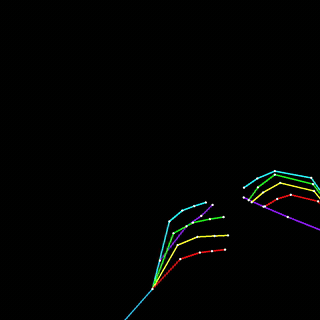
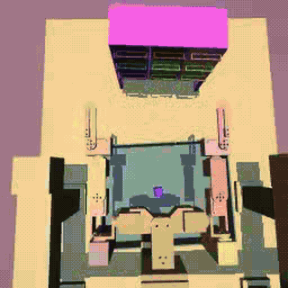
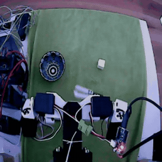
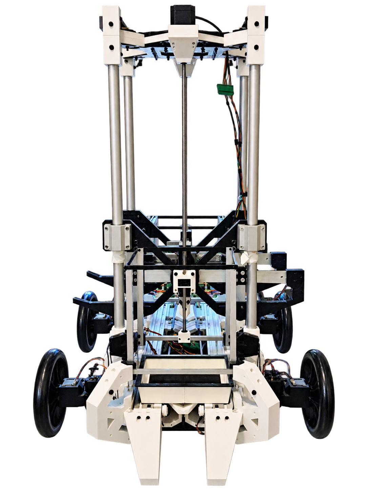
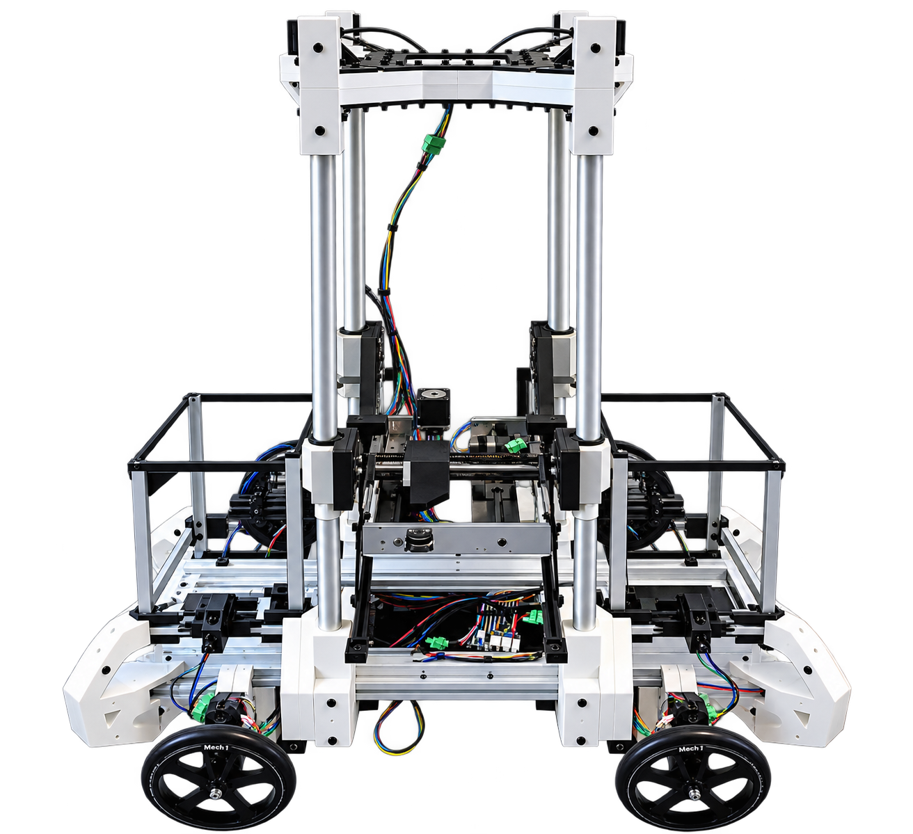
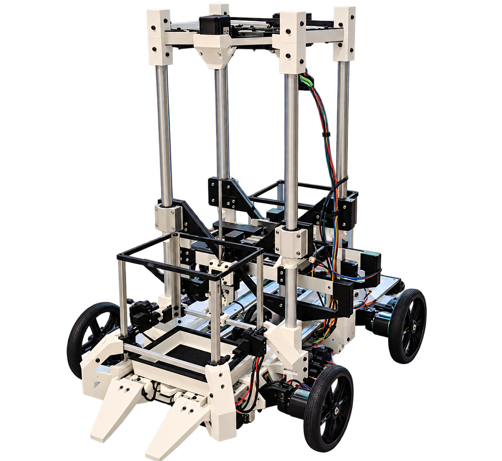

LLM Context
RAG provides procedures and policy metadata; ERP provides live inventory, location, and resource state.
Hepha combines LLM task planning, enterprise context, and fine-tuned π0.6 robot policies for fully autonomous execution.
(1)Coordinator translates the request into a π0.6 task.
(2)The assigned robot executes the π0.6 task.
(3)On task success, LLM Context and ERP state are updated.
Natural-language objectives must be grounded in inventory state, retrieved procedures, robot capabilities, and safety constraints. The research problem is compiling an LLM plan into an executable task graph.
Hepha separates probabilistic reasoning from deterministic control: the LLM proposes, typed interfaces validate, robot policies execute, and completion predicates authorize state updates.
The LLM compiles grounded context into a typed task graph. Deterministic services validate every node before policy execution.
RAG provides procedures and policy metadata; ERP provides live inventory, location, and resource state.
The LLM emits a typed dependency graph from a constrained skill vocabulary. A validator enforces schemas, permissions, and preconditions.
The coordinator schedules policies by capability and availability, locks shared resources, and triggers recovery.
Build LLM Context from RAG and ERP state.
Generate a typed, dependency-aware task graph.
Reject unsafe, ambiguous, or infeasible actions.
Dispatch navigation and manipulation robot policies.
Evaluate completion predicates and commit ERP state.
Hepha integrates two 6-DoF arms with a 3-axis Cartesian gantry, yielding a 15-DoF research platform.
Our fine-tuned and modified π0.6 Robot Policy maps vision, robot state, and language instructions to action chunks. Training progresses from pretrained VLM representations through egocentric, simulation, and behavior-cloning data, followed by RaC mid-training on recovery-and-correction interventions. The π0.6 adaptation note is in preparation; see the published RaC paper for the recovery-and-correction method.






Evaluation spans retrieval, cross-zone transport, robot handoff, stocking, and failure recovery under varied objects, targets, and fleet availability.
The primary metric is end-to-end success rate. Secondary metrics include policy success, replans, latency, intervention rate, ERP consistency, and safety violations.
A greenhouse provides a warehouse-like multi-robot test environment. Autonomous agents share aisles, coordinate policies, and operate on common state.
Black et al., π0: A Vision-Language-Action Flow Model for General Robot Control; Physical Intelligence et al., π0.5: A Vision-Language-Action Model with Open-World Generalization.
Hu et al., Carnegie Mellon University, RaC: Robot Learning for Long-Horizon Tasks by Scaling Recovery and Correction (2025).
Technical notes in preparation: LLM-Guided Multi-Robot Policy Orchestration and A Modular 15-DoF Platform for Autonomous Mobile Manipulation.
Research collaboration, policy evaluation, and technical inquiries.
meyniertristan10@gmail.com